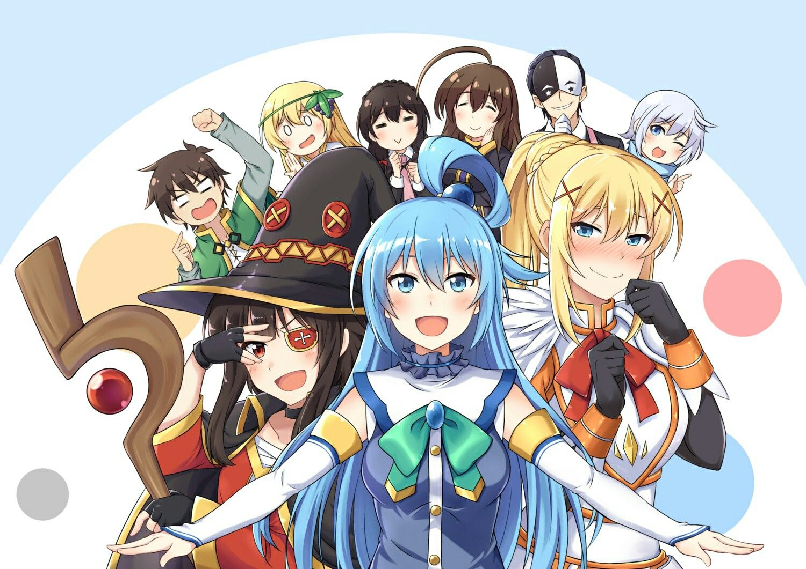

Коносуба - что это? mk II
Коносуба это исекай-комедия (исекай - это где главный герой оказывается в другом мире), в начале высмеивая остальные. От нелепой смерти, до того что его спутники бесполезны, а сам он не отличается особыми силами, не уничтожает все и вся, скорее наоборот. Хотя это не мешает ему как-то выполнять свою миссию, а именно уничтожать генералов армии Короля демонов, чтобы в итоге до него добраться.
